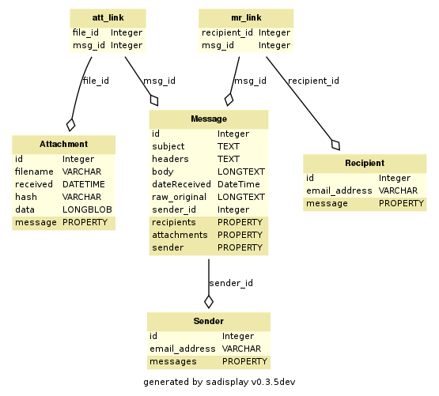

Database Definitions and Functions¶
Contents
SQLAlchemy.py - SQLAlchemy Database Definitions¶
from sqlalchemy.dialects.mysql import
BIGINT, BINARY, BIT, BLOB, BOOLEAN, CHAR, DATE,
DATETIME, DECIMAL, DECIMAL, DOUBLE, ENUM, FLOAT, INTEGER,
LONGBLOB, LONGTEXT, MEDIUMBLOB, MEDIUMINT, MEDIUMTEXT, NCHAR,
NUMERIC, NVARCHAR, REAL, SET, SMALLINT, TEXT, TIME, TIMESTAMP,
TINYBLOB, TINYINT, TINYTEXT, VARBINARY, VARCHAR, YEAR
This import is necessary in order to define the specific field type for a MySQL database
- database.SQLAlchemy.mr_link = Table('mr_link', MetaData(bind=None), Column('recipient_id', Integer(), ForeignKey('recipient.id'), table=<mr_link>), Column('msg_id', Integer(), ForeignKey('message.id'), table=<mr_link>), schema=None)¶
Special table used to create relationships between messages and recipients/attachments. This table is never referenced specifically in the code other than in the table definition for :py:class:Message. Links are generated automatically.
- database.SQLAlchemy.ma_link = Table('att_link', MetaData(bind=None), Column('file_id', Integer(), ForeignKey('attachment.id'), table=<att_link>), Column('msg_id', Integer(), ForeignKey('message.id'), table=<att_link>), schema=None)¶
Special table used to create relationships between messages and recipients/attachments. This table is never referenced specifically in the code other than in the table definition for Message. Links are generated automatically.
- class database.SQLAlchemy.Attachment(filename, received, hash, data)[source]¶
Attachments are stored as binary blobs in the MySQL database for later retrieval
- class database.SQLAlchemy.Message(subject, headers, body, dateReceived, raw_original)[source]¶
Messages contain automatically generated relationships to attachments and recipients via the mr_link and ma_link table definitions.

toDB.py - EARS Milter Database Population¶
- class database.toDB.toDB(username, password, server, database)[source]¶
This class holds all the functions to add/update new messages and attachments to the EARS database.
- __init__(username, password, server, database)[source]¶
To initialize the EARS database population class, you must provide a valid username, password, server and database names.
The database itself must exist prior to the first execution of EARS, but this class will automatically generate the necessary tables.
Currently, EARS is configured only to work with MySQL databases.
- newMessage(sender, subject, headers, raw_original, recipients)[source]¶
When a message is submitted to EARS, existing sender and recipient e-mail addresses are checked for in the databse. If they do not exist, they are added automatically.
- addAttachment(filename, filehash, data)[source]¶
When attachments are submitted to EARS, the filehash is compared with existing files in the database. If the file already exists, the datetime stamp is updated so that the attachment does not get deleted sooner than it should be when purgeEARSdb.py is run.